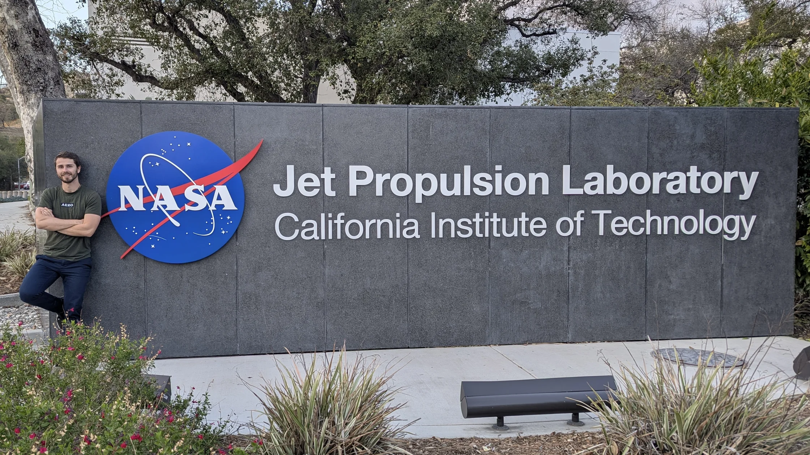

Jet Propulsion Laboratory · Pasadena, California
Federico works on machine learning for space communications, with a focus on Low Earth Orbit satellite constellations, autonomous lunar rover swarms, and decentralized intelligent networks. His work spans multi-agent reinforcement learning, foundational models, and communication-aware AI for autonomous space systems.
He also founded Blueberry Málaga, a technology education startup that taught robotics, programming, AI, and cybersecurity to more than 1,000 students.
Affiliations
-
University of MálagaMálaga, Spain
-
NASA Jet Propulsion LaboratoryPasadena, California, USA
-
 Johns Hopkins University ACE LabBaltimore, Maryland, USA
Johns Hopkins University ACE LabBaltimore, Maryland, USA